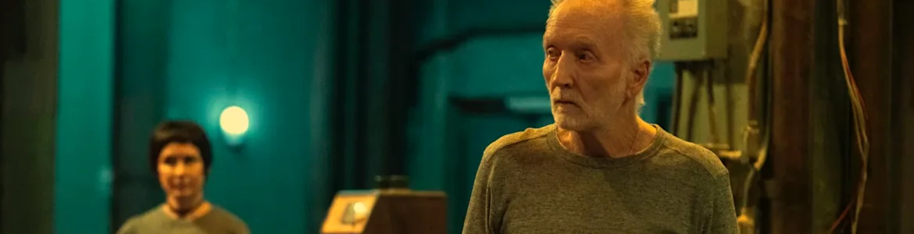

So, What's Up With SAW?
.png)
• Published 25/03/2025
The main way I watched movies as a kid was when Italia Uno aired the same few ones every year. One fine night, when I came into my parents’ bedroom, I saw a blonde guy cutting his foot off on the TV. Somehow I had the sense to say to myself “It’s better if I just don’t pay attention to whatever that is.” From then on, I just knew it as “The Foot Chopping Movie” and thought nothing of it, until I went to my friend’s house and she made me and a group of friends watch Saw II.
I thought the movie was fine, but thought the characters were way too dramatic. So what, you’re stuck in a murder house, that doesn’t impress me much. The movie stuck with me, more specifically, one character, the lady with the Alice Cullen haircut, Amanda Young. After 2 weeks of nonstop thinking about this movie, and Amanda, I spent the next two and a half years annoying every living soul about me by talking about the Saw franchise. From the moment I entered MCAST to the minute I finished my diploma, and a few months after that, I would talk about Saw very, very frequently.
I waited for Saw X patiently, and stayed off Twitter for a week to avoid spoilers since it came out a week later here, and trudged to Bugibba to watch it at Eden Cinemas after school. Saw X was AMAZING. The Saw franchise was finally starting to pick itself up again after a 10 year nosedive (although, Spiral wasn’t that bad, it just flopped).

Saw XI was announced a few weeks after the release of Saw X, and everyone was excited. It had the initial release date of September 24th, 2024, which people were a little confused about, but Saw movies are notorious for being filmed relatively quickly. Then we got the news that the release date was moved. By an entire YEAR. I accepted it. Sure, we had to wait longer, but if waiting longer meant that we’d get a movie similar to Saw X, with the same quality and a cast of amazing actors, including Shawnee Smith (Amanda Young) and Tobin Bell (John Kramer/Jigsaw), then I was completely fine with waiting.
And I waited for news about it, cast details, plot, etc...but nothing came. We knew that we’d get the writers and producers that made Saw 3D, which is possibly the worst entry ever, and that it would be related to Saw X, but nothing else. Saw X was filming between October of 2022 and February of 2023, so there’s technically time to film, but it’s still an incredibly small window of time. All we know is that there’s seemingly a script, but it’s stalled at “a managerial level” and that it’s pretty much close to dead, according to Bloody Disgusting. Lionsgate intends on making another movie, but there’s inter-squabbling between the higher-ups at Lionsgate and the producers. There was rumours of the franchise being sold to another production company, and although that was shot down, with the production company behind Saw still being Twisted Pictures, I’d secretly like to see it bought by Atomic Monster, James Wan’s production company, who directed the first movie.
In the meantime, you can catch up on all 10 Saw movies, starting with the original, released back in 2004, directed by James Wan and written by Leigh Whannel, available via the links below.
- Where to watch
- Apple TV
-
 Buy the DVD
Buy the DVD
- Netflix
-
 Rent on Youtube
Rent on Youtube